전기공사기사 (2018-03-04 기출문제)
1과목: 전기응용 및 공사재료
1. 정류방식 중 정류 효율이 가장 높은 것은? (단, 저항부하를 사용한 경우이다.)
- 단상 반파방식
- 단상 전파방식
- 3상 반파방식
- 3상 전파방식
(정답률: 82%)

2. 전기용접부의 비파괴검사와 관계없는 것은?
- X선 검사
- 자기 검사
- 고주파 검사
- 초음파 탐상시험
(정답률: 69%)
3. 합판 및 비닐막의 접착에 적당한 가열방식은?
- 유도가열
- 적외선가열
- 직접 저항가열
- 고주파 유전가열
(정답률: 72%)
4. 전지의 자기방전이 일어나는 국부작용의 방지대책으로 틀린 것은?
- 순환전류를 발생시킨다.
- 고순도의 전극재료를 사용한다.
- 전극에 수은도금(아말감)을 한다.
- 전해액에 불순물 혼입을 억제시킨다.
(정답률: 78%)
5. 루소선도가 그림과 같이 표시되는 광원의 하반구 광속은 약 몇 lm인가? (단, 여기서 곡선 BC는 4분원이다.)
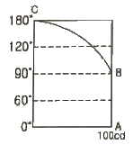
- 245
- 493
- 628
- 1120
(정답률: 75%)
6. 다이오드 클램퍼(clamper)의 용도는?
- 전압증폭
- 전류증폭
- 전압제한
- 전압레벨 이동
(정답률: 71%)
7. 부식성의 산, 알칼리 또는 유해가스가 있는 장소에서 실용상 지장 없이 사용할 수 있는 구조의 전동기는?
- 방적형
- 방진형
- 방수형
- 방식형
(정답률: 80%)
8. 플라이휠을 이용하여 변동이 심한 부하에 사용되고 가역 운전에 알맞은 속도제어 방식은?
- 일그너 방식
- 워드 래너드 방식
- 극수를 바꾸는 방식
- 전원주파수를 바꾸는 방식
(정답률: 77%)
9. 가로 12m, 세로 20m인 사무실에 평균조도 400lx를 얻고자 32W전광속 3000lm인 형광등을 사용하였을 때 필요한 등수는? (단, 조명률은 0.5, 감광보상률은 1.25이다.)
- 50
- 60
- 70
- 80
(정답률: 72%)
10. 전차의 경제적인 운전방법이 아닌 것은?
- 가속도를 크게 한다.
- 감속도를 크게 한다.
- 표정속도를 작게 한다.
- 가속도ㆍ감속도를 작게 한다.
(정답률: 77%)
11. 공기전지의 특징이 아닌 것은?
- 방전 시에 전압변동이 적다.
- 온도차에 의한 전압변동이 적다.
- 내열, 내한, 내습성을 가지고 있다.
- 사용 중의 자기방전이 크고 오랫동안 보존할 수 없다.
(정답률: 79%)
12. 캡타이어 케이블 상호 및 캡타이어 케이블과 박스, 기구와의 접속개소와 지지점간의 거리는 접속개소에서 최대 몇 m 이하로 하는 것이 바람직한가?
- 0.75
- 0.55
- 0.25
- 0.15
(정답률: 44%)
13. 접지극으로 탄소피복강봉을 사용하는 경우 최소 규격으로 옳은 것은?
- 지름 8mm 이상의 강심, 길이 0.9m 이상일 것
- 지름 10mm 이상의 강심, 길이 1.2m 이상일 것
- 지름 12mm 이상의 강심, 길이 1.4m 이상일 것
- 지름 14mm 이상의 강심, 길이 1.6m 이상일 것
(정답률: 59%)
14. 전선의 굵기가 95mm2 이하인 경우 배전반과 분전반의 소형덕트의 폭은 최소 몇 cm 인가?
- 8
- 10
- 15
- 20
(정답률: 56%)
15. 효율이 우수하고 특히 등홍색 단색광으로 연색성이 문제되지 않는 도로조명, 터널조명 등에 많이 사용되고 있는 등(lamp)은?
- 크세논등
- 고압 수은등
- 저압 나트륨등
- 메탈 할라이드등
(정답률: 84%)
16. 도체의 재료로 주로 사용되는 구리와 알루미늄의 물리적 성질을 비교한 것 중 옳은 것은?
- 구리가 알루미늄 보다 비중이 작다.
- 구리가 알루미늄 보다 저항률이 크다.
- 구리가 알루미늄 보다 도전율이 작다.
- 구리와 같은 저항을 갖기 위해서는 알루미늄 전선의 지름을 구리보다 굵게 한다.
(정답률: 72%)
17. 다음 조명기구의 배광에 의한 분류 중 병실이나 침실에 시설할 조명기구로 가장 적합한 것은?
- 직접 조명기구
- 반간접 조명기구
- 반직접 조명기구
- 전반확산 조명기구
(정답률: 75%)
18. KS C IEC 623⑤에 의한 수뢰도체, 피뢰침과 인하도선의 재료로 사용되지 않는 것은?
- 구리
- 순금
- 알루미늄
- 용융아연도금강
(정답률: 79%)
19. 보호계전기의 종류가 아닌 것은?
- ASS
- RDR
- DGR
- OCGR
(정답률: 84%)
20. 플로어덕트 배선에 사용하는 절연전선이 연선일 때 단면적은 최소 몇 mm2를 초과하여야 하는가?
- 6
- 10
- 16
- 25
(정답률: 48%)
2과목: 전력공학
21. %임피던스와 관련된 설명으로 틀린 것은?
- 정격전류가 증가하면 %임피던스는 감소한다.
- 직렬리액터가 감소하면 %임피던스도 감소한다.
- 전기기계의 %임피던스가 크면 차단기의 용량은 작아진다.
- 송전계통에서는 임피던스의 크기를 옴값대신에 %값으로 나타내는 경우가 많다.
(정답률: 21%)
22. 그림과 같이 전력선과 통신선 사이에 차폐선을 설치하였다. 이 경우에 통신선의 차폐계수(K)를 구하는 관계식은? 단, 차폐선을 통신선에 근접하여 설치한다.
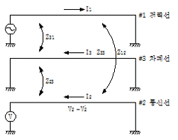
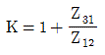
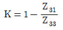
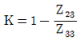
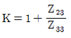
(정답률: 26%)
23. 4단자 정수가 A, B, C, D인 선로에 임피던스가 1/ZT인 변압기가 수전단에 접속된 경우 계통의 4단자 정수 중 D0는?
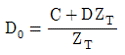
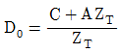
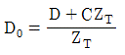
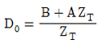
(정답률: 22%)
24. 단상변압기 3대에 의한 △결선에서 1대를 제거하고 동일전력을 V결선으로 보낸다면 동손은 약 몇 배가 되는가?
- 0.67
- 2.0
- 2.7
- 3.0
(정답률: 19%)
25. 그림과 같이 “수류가 고체에 둘러싸여 있고 A로부터 유입되는 수량과 B로부터 유출되는 수량이 같다”고 하는 이론은?
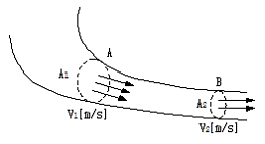
- 수두이론
- 연속의 원리
- 베르누이의 정리
- 토리첼리의 정리
(정답률: 34%)
26. 송전선에서 재폐로 방식을 사용하는 목적은?
- 역률 개선
- 안정도 증진
- 유도장해의 경감
- 코로나 발생방지
(정답률: 33%)
27. 송전선로의 일반회로 정수가 A=0.7, B=j190, D=0.9 일 때 C의 값은?
- -j1.95×10-3
- j1.95×10-3
- -j1.95×10-4
- j1.95×10-4
(정답률: 26%)
28. 대용량 고전압의 안정권선(△권선)이 있다. 이 권선의 설치 목적과 관계가 먼 것은?
- 고장전류 저감
- 제3고조파 제거
- 조상설비 설치
- 소내용 전원공급
(정답률: 18%)
29. 변압기 등 전력설비 내부 고장 시 변류기에 유입하는 전류와 유출하는 전류의 차로 동작하는 보호계전기는?
- 차동계전기
- 지락계전기
- 과전류계전기
- 역상전류계전기
(정답률: 36%)
30. A, B 및 C상 전류를 각각 Ia, Ib, 및 Ic라 할 때
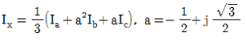
으로 표시되는 Ix는 어떤 전류인가?- 정상전류
- 역상전류
- 영상전류
- 역상전류와 영상전류의 합
(정답률: 33%)
31. SF6 가스차단기에 대한 설명으로 틀린 것은?
- SF6 가스 자체는 불활성 기체이다.
- SF6가스는 공기에 비하여 소호능력이 약 100배 정도이다.
- 절연거리를 적게 할 수 있어 차단기 전체를 소형, 경량화 할 수 있다.
- SF6 가스를 이용한 것으로서 독성이 있으므로 취급에 유의하여야 한다.
(정답률: 36%)
32. 부하역률이 0.8인 선로의 저항손실은 0.9인 선로의 저항손실에 비해서 약 몇 배 정도 되는가?
- 0.97
- 1.1
- 1.27
- 1.5
(정답률: 29%)
33. 송전선로의 정전용량은 등가 선간거리 D가 증가하면 어떻게 되는가?
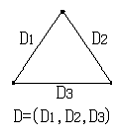
- 증가한다.
- 감소한다.
- 변하지 않는다.
- D2에 반비례하여 감소한다.
(정답률: 30%)
34. 모선 보호에 사용되는 계전방식이 아닌 것은?
- 위상 비교방식
- 선택접지 계전방식
- 방향거리 계전방식
- 전류차동 보호방식
(정답률: 22%)
35. 설비용량이 360kW, 수용률 0.8, 부등률 1.2 일 때 최대수용전력은 몇 kW 인가?
- 120
- 240
- 360
- 480
(정답률: 35%)
36. 단상 2선식 배전선로의 선로임피던스가 2+j5Ω이고 무유도성 부하전류 10A 일 때 송전단 역률은? (단, 수전단 전압의 크기는 100V이고, 위상각은 0°이다.)
- 5/12
- 5/13
- 11/12
- 12/13
(정답률: 17%)
37. 3상 결선 변압기의 단상운전에 의한 소손방지 목적으로 설치하는 계전기는?
- 차동계전기
- 역상계전기
- 단락계전기
- 과전류계전기
(정답률: 22%)
38. 한류리액터를 사용하는 가장 큰 목적은?
- 충전전류의 제한
- 접지전류의 제한
- 누설전류의 제한
- 단락전류의 제한
(정답률: 35%)
39. 피뢰기의 충격방전 개시전압은 무엇으로 표시하는가?
- 직류전압의 크기
- 충격파의 평균치
- 충격파의 최대치
- 충격파의 실효치
(정답률: 31%)
40. 배전계통에서 사용하는 고압용 차단기의 종류가 아닌 것은?
- 기중차단기 ACB
- 공기차단기 ABB
- 진공차단기 VCB
- 유입차단기 OCB
(정답률: 29%)
3과목: 전기기기
41. 부하 급변 시 부하각과 부하 속도가 진동하는 난조 현상을 일으키는 원인이 아닌 것은?
- 전기자 회로의 저항이 너무 큰 경우
- 원동기의 토크에 고조파가 포함된 경우
- 원동기의 조속기 감도가 너무 예민한 경우
- 자속의 분포가 기울어져 자속의 크기가 감소한 경우
(정답률: 21%)
42. 권선형 유도 전동기의 전부하 운전 시 슬립이 4%이고, 2차 정격전압이 150V 이면 2차 유도기전력은 몇 V 인가?
- 9
- 8
- 7
- 6
(정답률: 32%)
43. 권선형 유도전동기 저항제어법의 단점 중 틀린 것은?
- 운전 효율이 낮다.
- 부하에 대한 속도 변동이 작다.
- 제어용 저항기는 가격이 비싸다.
- 부하가 적을 때는 광범위한 속도 조정이 곤란하다.
(정답률: 18%)
44. 정격부하에서 역률 0.8(뒤짐)로 운전될 때, 전압 변동률이 12%인 변압기가 있다. 이 변압기에 역률 100%의 정격 부하를 걸고 운전할 때의 전압 변동률은 약 몇 %인가? (단, %저항강하는 %리액턴스강하의 1/12이라고 한다.)
- 0.909
- 1.5
- 6.85
- 16.18
(정답률: 21%)
45. 직류전동기의 회전수를 1/2로 하자면 계자자속을 어떻게 해야 하는가?
- 1/4로 감소시킨다.
- 1/2로 감소시킨다.
- 2배로 증가시킨다.
- 4배로 증가시킨다.
(정답률: 27%)
46. 변압기 결선방식 중 3상에서 6상으로 변환할 수 없는 것은?
- 2중 성형
- 환상 결선
- 대각 결선
- 2중 6각 결선
(정답률: 24%)
47. 3상 유도전동기의 슬립이 s일 때 2차 효율[%]은?
- (1-s)×100
- (2-s)×100
- (3-s)×100
- (4-s)×100
(정답률: 34%)
48. 전기자저항 ra=0.2Ω, 동기리액턴스 xs=20Ω인 Y결선의 3상 동기발전기가 있다. 3상 중 1상의 단자전압 V=4400V, 유도기전력 E=6600V이다. 부하각 δ=30°라고 하면 발전기의 출력은 약 몇 kW인가?
- 2178
- 3251
- 4253
- 5532
(정답률: 24%)
49. 실리콘 제어정류기(SCR)의 설명 중 틀린 것은?
- P-N-P-N 구조로 되어 있다.
- 인버터 회로에 이용될 수 있다.
- 고속도의 스위치 작용을 할 수 있다.
- 게이트에 (+)와 (-)의 특성을 갖는 펄스를 인가하여 제어한다.
(정답률: 26%)
50. 동기조상기의 여자전류를 줄이면?
- 콘덴서로 작용
- 리액터로 작용
- 진상전류로 됨
- 저항손의 보상
(정답률: 32%)
51. 반도체 정류기에 적용된 소자 중 첨두 역방향 내전압이 가장 큰 것은?
- 셀렌 정류기
- 실리콘 정류기
- 게르마늄 정류기
- 아산화동 정류기
(정답률: 34%)
52. 직류발전기가 90% 부하에서 최대효율이 된다면 이 발전기의 전부하에 있어서 고정손과 부하손의 비는?
- 1.1
- 1.0
- 0.9
- 0.81
(정답률: 27%)
53. 교류발전기의 고조파 발생을 방지하는 방법으로 틀린 것은?
- 전기자 반작용을 크게 한다.
- 전기자 권선을 단절권으로 감는다.
- 전기자 슬롯을 스큐 슬롯으로 한다.
- 전기자 권선의 결선을 성형으로 한다.
(정답률: 30%)
54. 동기전동기에서 전기자 반작용을 설명한 것 중 옳은 것은?
- 공급전압보다 앞선 전류는 감자작용을 한다.
- 공급전압보다 뒤진 전류는 감자작용을 한다.
- 공급전압보다 앞선 전류는 교차자화작용을 한다.
- 공급전압보다 뒤진 전류는 교차자화작용을 한다.
(정답률: 28%)
55. 권선형 유도전동기에서 비례추이에 대한 설명으로 틀린 것은? (단, sm은 최대토크 시 슬립이다.)
- r2를 크게 하면 sm은 커진다.
- r2를 삽입하면 최대토크가 변한다.
- r2를 크게 하면 기동토크도 커진다.
- r2를 크게 하면 기동전류는 감소한다.
(정답률: 27%)
56. 단상 직권 전동기의 종류가 아닌 것은?
- 직권형
- 아트킨손형
- 보상직권형
- 유도보상직권형
(정답률: 32%)
57. 사이리스터 2개를 사용한 단상 전파정류회로에서 직류전압 100V를 얻으려면 PIV가 약 몇 V 인 다이오드를 사용하면 되는가?
- 111
- 141
- 222
- 314
(정답률: 25%)
58. 150kVA의 변압기의 철손이 1kW, 전부하동손이 2.5kW이다. 역률 80%에 있어서의 최대효율은 약 몇 %인가?
- 95
- 96
- 97.4
- 98.5
(정답률: 22%)
59. 단상 직권 정류자 전동기의 전기자 권선과 계자권선에 대한 설명으로 틀린 것은?
- 계자권선의 권수를 적게 한다.
- 전기자 권선의 권수를 크게 한다.
- 변압기 기전력을 적게 하여 역률 저하를 방지한다.
- 브러시로 단락되는 코일 중의 단락전류를 많게 한다.
(정답률: 24%)
60. 단상 변압기 3대를 이용하여 3상 △-Y 결선을 했을 때 1차와 2차 전압의 각변위(위상차)는?
- 0°
- 60°
- 150°
- 180°
(정답률: 24%)
4과목: 회로이론 및 제어공학
61. 그림과 같이 R[Ω]의 저항을 Y결선으로 하여 단자의 a, b 및 c에 비대칭 3상 전압을 가할 때, a 단자의 중성점 N에 대한 전압은 약 몇 V 인가? (단, Vab=210V, Vbc=-90-J180V, Vca=-120+J180V)
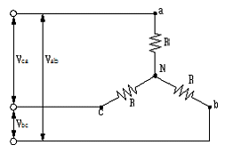
- 100
- 116
- 121
- 125
(정답률: 11%)
62. 최대값이 Em인 반파 정류 정현파의 실효값은 몇 V인가?
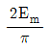
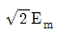
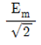
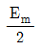
(정답률: 24%)
63. 그림의 왜형파를 푸리에의 급수로 전개할 때, 옳은 것은?
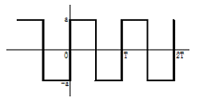
- 우수파만 포함한다.
- 기수파만 포함한다.
- 우수파, 기수파 모두 포함한다.
- 푸리에의 급수로 전개 할 수 없다.
(정답률: 26%)
64. 그림과 같은 4단자 회로망에서 하이브리드 파라미터 H11은?
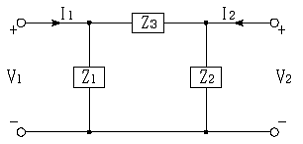
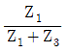
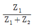
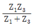
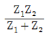
(정답률: 21%)
65. 내부저항 0.1Ω인 건전지 10개를 직렬로 접속하고 이것을 한조로 하여 5조 병렬로 접속하면 합성 내부저항은 몇 Ω 인가?
- 5
- 1
- 0.5
- 0.2
(정답률: 31%)
66. 대칭좌표법에서 대칭분을 각 상전압으로 표시한 것 중 틀린 것은?
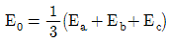
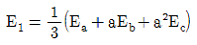
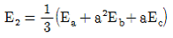
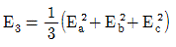
(정답률: 34%)
67. R-L 직렬회로에서 스위치 S가 1번 위치에 오랫동안 있다가 t=0+에서 위치 2번으로 옮겨진 후, L/R[s] 후에 L에 흐르는 전류[A]는?
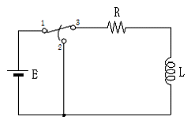
- E/R
- 0.5E/R
- 0.368E/R
- 0.632E/R
(정답률: 19%)
68. 대칭좌표법에서 불평형률을 나타내는 것은?
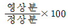
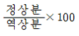
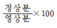
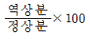
(정답률: 31%)
69. 함수 f(t)의 라플라스 변환은 어떤 식으로 정의되는가?
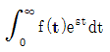
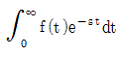
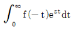
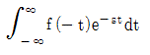
(정답률: 30%)
70. 분포 정수회로에서 선로정수가 R, L, C, G이고 무왜형 조건이 RC=GL과 같은 관계가 성립될 때 선로의 특성 임피던스 Z0는? (단, 선로의 단위길이당 저항을 R, 인덕턴스를 L, 정전용량을 C, 누설컨덕턴스를 G라 한다.
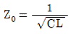
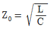
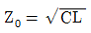
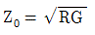
(정답률: 33%)
71. 개루프 전달함수
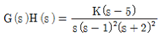
일 때 주어지는 계에서 점근선 교차점은?- -3/2
- -7/4
- 5/3
- -1/5
(정답률: 25%)
72. 그림과 같은 블록선도에서 C(s)/R(s) 값은?
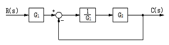
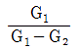
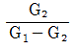
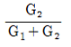
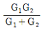
(정답률: 29%)
73. 개루프 전달함수 G(s)가 다음과 같이 주어지는 단위 부궤환계가 있다. 단위 계단입력이 주어졌을 때, 정상상태 편차가 0.⑤가 되기 위해서는 K의 값은 얼마인가?
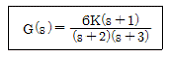
- 19
- 20
- 0.95
- 0.⑤
(정답률: 18%)
74. 제어량의 종류에 따른 분류가 아닌 것은?
- 자동조정
- 서보기구
- 적응제어
- 프로세스제어
(정답률: 23%)
75. 다음과 같은 진리표를 갖는 회로의 종류는?
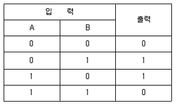
- AND
- NOR
- NAND
- EX-OR
(정답률: 32%)
76. 다음 방정식으로 표시되는 제어계가 있다. 이 계를 상태 방정식
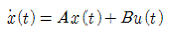
로 나타내면 계수 행렬 A는?(정답률: 31%)
77. 특성방정식이 s3+2s2+Ks+5=0가 안정하기 위한 K의 값은?
- K＞0
- K＜0
- K＞5/2
- K＜5/2
(정답률: 30%)
78. 안정한 제어계에 임펄스 응답을 가했을 때 제어계의 정상상태 출력은?
- 0
- +∞ 또는 -∞
- +의 일정한 값
- -의 일정한 값
(정답률: 23%)
79. 신호흐름선도에서 전달함수 C/R를 구하면?
(정답률: 32%)
80. 단위계단함수의 라플라스변환과 z변환함수는?
(정답률: 31%)
5과목: 전기설비기술기준 및 판단기준
81. 태양전지 모듈의 시설에 대한 설명으로 옳은 것은?
- 충전부분은 노출하여 시설할 것
- 출력배선은 극성별로 확인 가능토록 표시할 것
- 전선은 공칭단면적 1.5mm2 이상의 연동선을 사용할 것
- 전선을 옥내에 시설할 경우에는 애자사용 공사에 준하여 시설할 것
(정답률: 27%)
82. 최대 사용전압 23kV의 권선으로 중성점접지식 전로(중성선을 가지는 것으로 그 중성선에 다중 접지를 하는 전로)에 접속되는 변압기는 몇 V의 절연내력 시험전압에 견디어야 하는가?
- 21160
- 25300
- 38750
- 34500
(정답률: 32%)
83. 제3종 접지공사에 사용되는 접지선의 굵기는 공칭단면적 몇 mm2 이상의 연동선을 사용하여야 하는가?
- 0.75
- 2.5
- 6
- 16
(정답률: 22%)
84. 케이블 트레이공사에 사용하는 케이블 트레이의 시설기준으로 틀린 것은?
- 케이블 트레이 안전율은 1.3 이상이어야 한다.
- 비금속제 케이블 트레이는 난연성 재료의 것이어야 한다.
- 전선의 피복 등을 손상시킬 돌기 등이 없이 매끈해야 한다.
- 저압옥내배선의 사용전압이 400V 미만인 경우에는 금속제 트레이에 제3종 접지공사를 하여야 한다.
(정답률: 30%)
85. 사용전압이 60kV 이하인 경우 전화선로의 길이 12km 마다 유도전류는 몇 ㎂를 넘지 않도록 하여야 하는가?
- 1
- 2
- 3
- 5
(정답률: 35%)
86. 특고압을 직접 저압으로 변성하는 변압기를 시설하여서는 아니 되는 변압기는?
- 광산에서 물을 양수하기 위한 양수기용 변압기
- 전기로 등 전류가 큰 전기를 소비하기 위한 변압기
- 교류식 전기철도용 신호회로에 전기를 공급하기 위한 변압기
- 발전소, 변전소, 개폐소 또는 이에 준하는 곳의 소내용 변압기
(정답률: 25%)
87. 고압 가공전선으로 경동선 또는 내열 동합금선을 사용할 때 그 안전율은 최소 얼마 이상이되는 이도로 시설하여야 하는가?
- 2.0
- 2.2
- 2.5
- 3.3
(정답률: 28%)
88. 저압 옥측전선로에서 목조의 조영물에 시설할 수 있는 공사 방법은?
- 금속관공사
- 버스덕트공사
- 합성수지관공사
- 연피 또는 알루미늄 케이블공사
(정답률: 23%)
89. 터널 안 전선로의 시설방법으로 옳은 것은?
- 저압전선은 지름 2.6㎜의 경동선의 절연전선을 사용하였다.
- 고압전선은 절연전선을 사용하여 합성수지관 공사로 하였다.
- 저압전선을 애자사용 공사에 의하여 시설하고 이를 레일면상 또는 노면상 2.2m의 높이로 시설하였다.
- 고압전선을 금속관공사에 의하여 시설하고 이를 레일면상 또는 노면상 2.4m의 높이로 시설하였다.
(정답률: 26%)
90. 과전류차단기로 시설하는 퓨즈 중 고압전로에 사용하는 포장퓨즈는 정격전류의 몇 배의 전류에 견디어야 하는가?
- 1.1
- 1.25
- 1.3
- 1.6
(정답률: 19%)
91. 발전소ㆍ변전소ㆍ개폐소 또는 이에 준하는 곳에서 개폐기 또는 차단기에 사용하는 압축공기장치의 공기압축기는 최고 사용압력의 1.5배의 수압을 연속하여 몇 분간 가하여 시험을 하였을 때에 이에 견디고 또한 새지 아니하여야 하는가?
- 5
- 10
- 15
- 20
(정답률: 36%)
92. 전로에 대한 설명 중 옳은 것은?
- 통상의 사용 상태에서 전기를 절연한 곳
- 통상의 사용 상태에서 전기를 접지한 곳
- 통상의 사용 상태에서 전기가 통하고 있는 곳
- 통상의 사용 상태에서 전기가 통하고 있지 않은 곳
(정답률: 36%)
93. 가공 직류 전차선의 레일면상의 높이는 4.8m 이상이어야 하나 광산 기타의 갱도 안의 윗면에 시설하는 경우는 몇 m 이상이어야 하는가?(오류 신고가 접수된 문제입니다. 반드시 정답과 해설을 확인하시기 바랍니다.)
- 1.8
- 2
- 2.2
- 2.4
(정답률: 15%)
94. 그림은 전력선 반송통신용 결합장치의 보안장치를 나타낸 것이다. S의 명칭으로 옳은 것은?
- 동축 케이블
- 결합 콘덴서
- 접지용 개폐기
- 구상용 방전갭
(정답률: 33%)
95. 저압 옥상전선로를 전개된 장소에 시설하는 내용으로 틀린 것은?
- 전선은 절연전선일 것
- 전선은 2.5mm2 이상의 경동선일 것
- 전선과 그 저압 옥상전선로를 시설하는 조영재와의 이격거리는 2m 이상일 것
- 전선은 조영재에 내수성이 있는 애자를 사용하여 지지하고 그 지지점 간의 거리는 15m 이하일 것
(정답률: 15%)
96. 가공전선로 지지물의 승탑 및 승주방지를 위한 발판 볼트는 지표상 몇 m 미만에 시설 하여서는 아니 되는가?
- 1.2
- 1.5
- 1.8
- 2.0
(정답률: 34%)
97. 고압 보안공사에서 지지물이 A종 철주인 경우 경간은 몇 m 이하 인가?
- 100
- 150
- 250
- 400
(정답률: 18%)
98. 무대, 무대마루 밑, 오캐스트라 박스, 영사실 기타 사람이나 무대 도구가 접촉할 우려가 있는 곳에 시설하는 저압 옥내배선, 전구선 또는 이동전선은 사용전압이 몇 V 미만이어야 하는가?
- 60
- 110
- 220
- 400
(정답률: 30%)
99. 금속덕트 공사에 의한 저압 옥내배선공사 시설에 대한 설명으로 틀린 것은?
- 저압 옥내배선의 사용전압이 400V 미만인 경우에는 덕트에 제3종 접지공사를 한다.
- 금속덕트는 두께 1.0㎜ 이상인 철판으로 제작하고 덕트 상호간에 완전하게 접속한다.
- 덕트를 조영재에 붙이는 경우 덕트 지지점간의 거리를 3m 이하로 견고하게 붙인다.
- 금속덕트에 넣은 전선의 단면적의 합계가 덕트의 내부 단면적의 20% 이하가 되도록 한다.
(정답률: 24%)
100. 저압 옥내간선에서 분기하여 전기사용 기계기구에 이르는 저압 옥내전로는 분기점에서 전선의 길이가 몇 m 이하인 곳에 개폐기 및 과전류차단기를 시설하여야 하는가?
- 2
- 3
- 4
- 5
(정답률: 28%)